Explore the images related to the Ministry of Health's work and initiatives.
Gallery
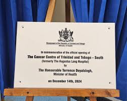
Cancer Centre Opening Happening Now: The Honourable Terrence Deyalsingh, Minister of Health cuts the ribbon at the opening ceremony of the Cancer Centre of Trinidad and Tobago-South.
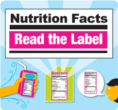
Reading Foods CampaignWhen trying to help young people understand the importance of healthy food choices, we often focus on getting them to eat healthier foods like whole grains, fruits and vegetables,
or we look at educating them about where their food comes from and how to cook healthy meals.
But an often overlooked opportunity is that of educating young people about how to read food nutrition labels..
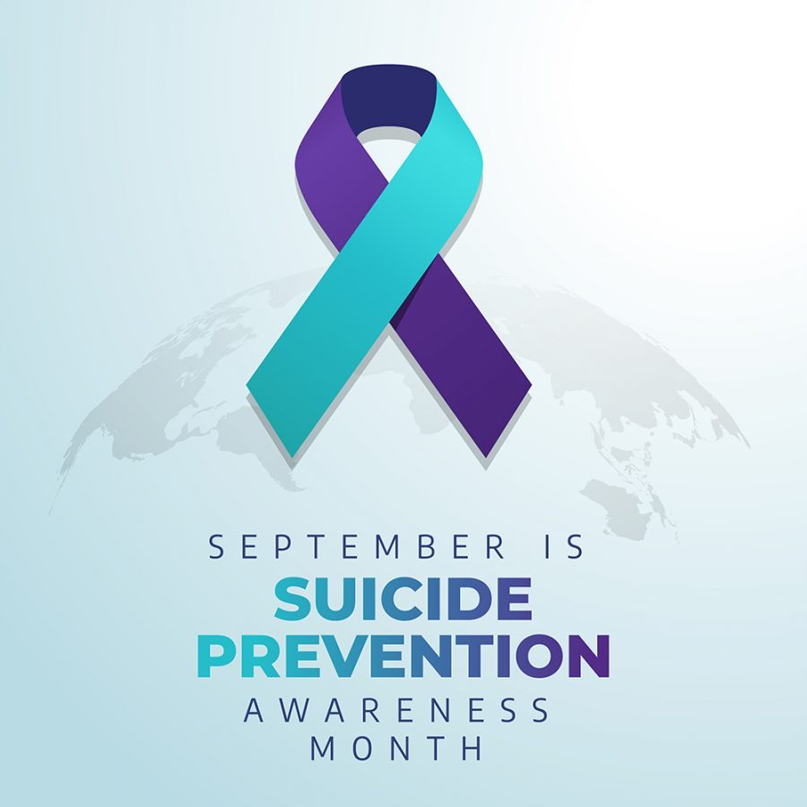
Suicide Prevention September is National Suicide Prevention Month. Suicide prevention is important every day of the year, but for the many organizations doing crucial and often unsung work all year long,
September provides unique opportunities to raise awareness of risk factors, provide help for those who are struggling, and give support to those affected by the suicide of a loved one. WHO/PAHO Service Robot Giveaway September 4, 2024 (PAHO) — In a landmark event, the Pan American Health Organization, Regional Office for the Americas of the World Health Organization (PAHO/WHO) in Trinidad and Tobago proudly handed over
a fleet of 8 state-of-the-art health service robots to the Ministry of Health, signaling a new era in healthcare delivery for the nation.September 4, 2024 (PAHO) — In a landmark event, the Pan American Health Organization,
Regional Office for the Americas of the World Health Organization (PAHO/WHO) in Trinidad and Tobago proudly handed over a fleet of 8 state-of-the-art health service robots to the Ministry of Health,
signaling a new era in healthcare delivery for the nation.
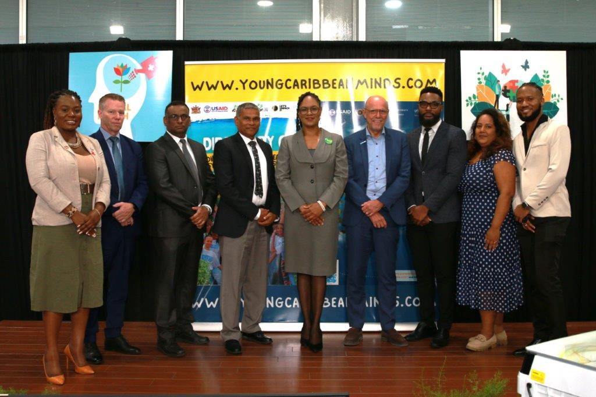
Youth Mental Health Program Opening Webster-Roy was speaking at the Child and Youth Mental Health Resources Launch and Activate Talk, at the Office of the Prime Minister’s St. Clair Office on Wednesday.
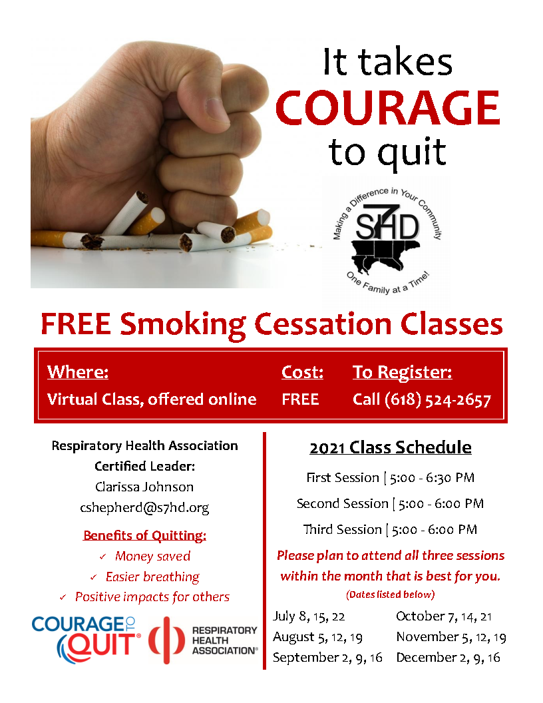
Smoking Cessation Training Workshop ONLINE - Courage to Quit - Stop Smoking Program Blood Donation Drive Tobago's blood Donation Drive
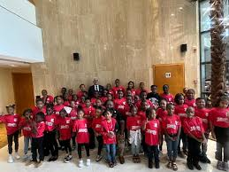
TT Moves Junior Graduation Ceremony The Honourable Terrence Deyalsingh, Minister of Health attended the TT Moves Junior Graduation Ceremony at the National Academy for the Performing Arts.
This initiative, spearheaded by the Ministry of Health
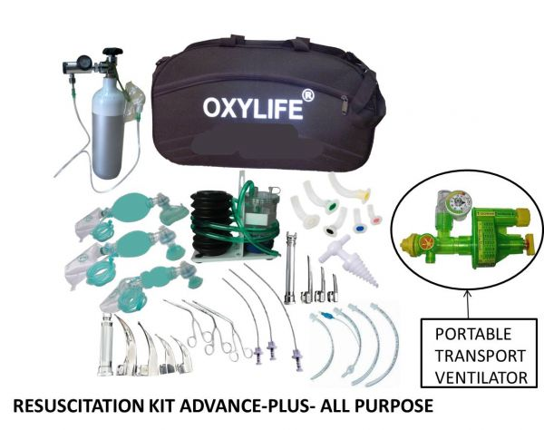
Resuscitation Equipment Oxylife Resuscitation Kit AdvancePLUS
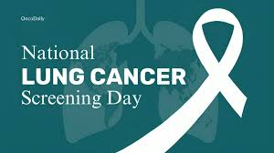
National Day of Screening National Lung Cancer Screening Day Saturday, November 11, 2023.
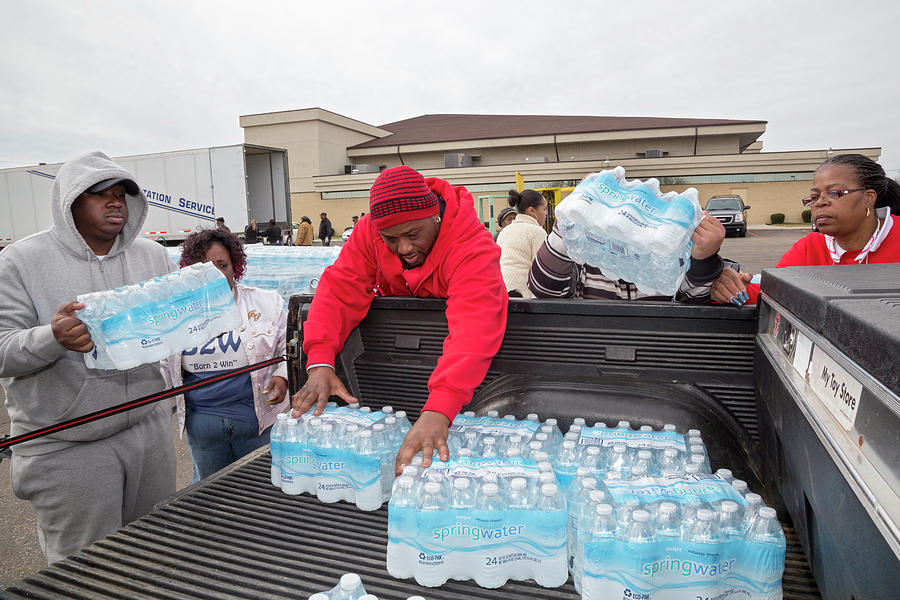
Water Bottle Distribution Flint Bottled Drinking Water Distribution
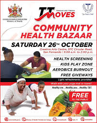
Hamper Giveaway The Ministry of Health - Trinidad and Tobago's Community Health Bazaar will be in full swing!
Head down to the Creative Arts Centre and benefit from free health training, information booths, giveaways and much more
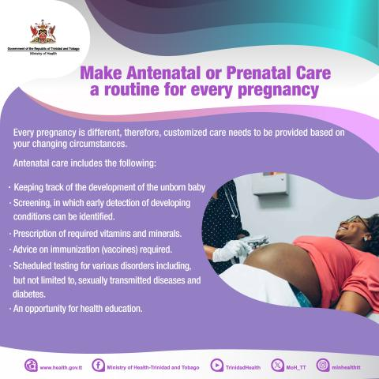
Pregnancy Project Giveaway The Directorate of Women’s Health is charged with the responsibility of implementing policies that specifically target and bring about improvement to women’s healthcare issues.
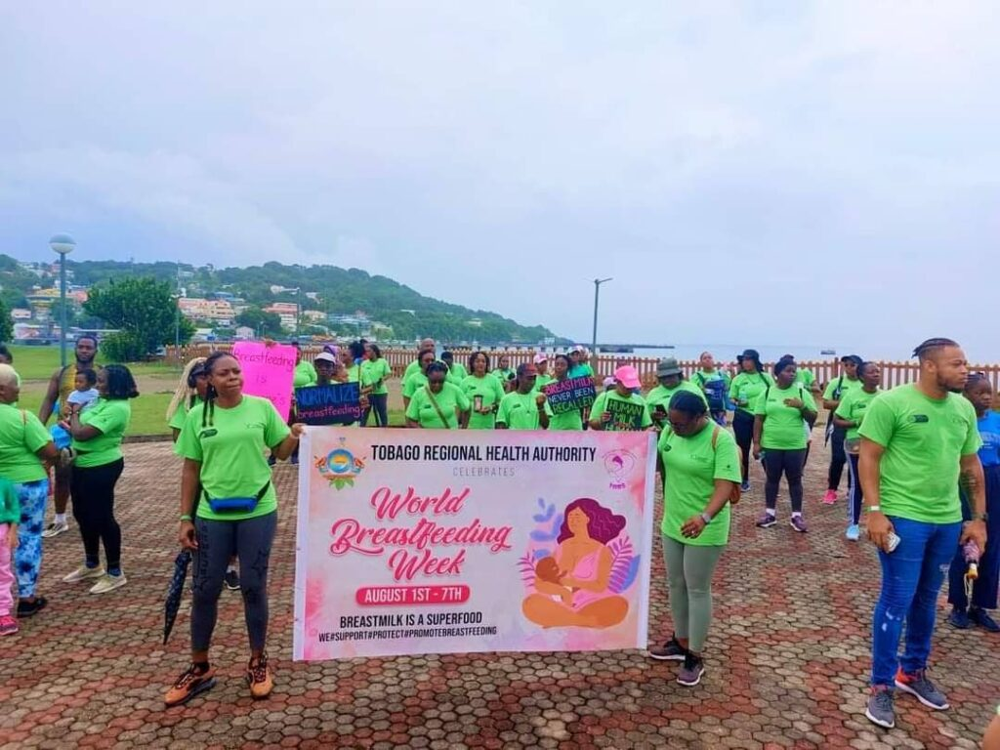
Breastfeeding Annual Walk WORLD Breastfeeding Week (WBW) will be celebrated across the world with the theme Closing the Gap: Breastfeeding Support for All.
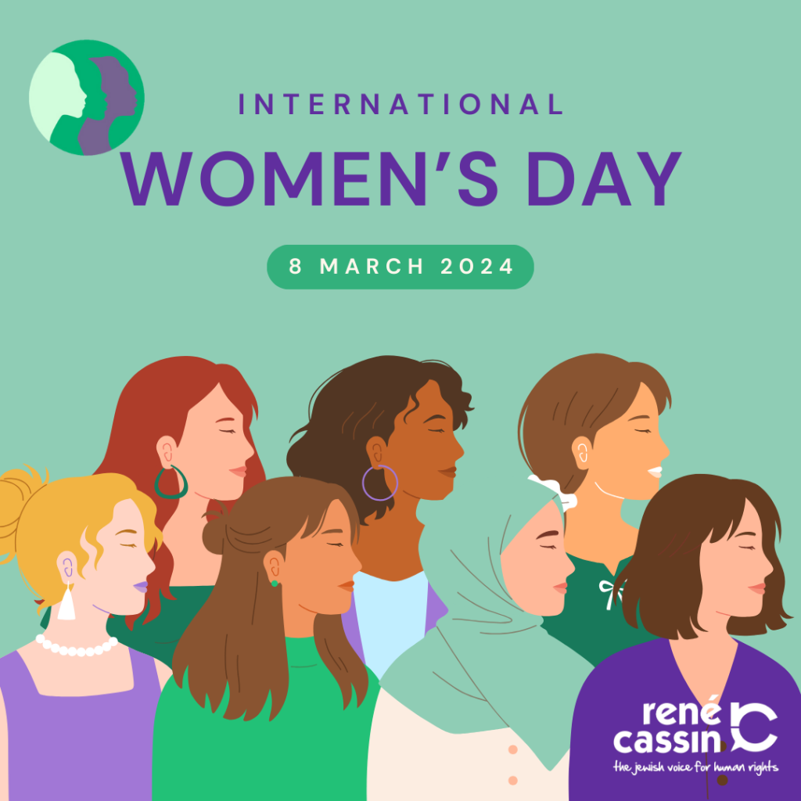
International Women's Day Completion 8 Mar, 2024 International Women’s Day, we remember that the only way to enjoy human rights, is to ensure the complete protection of women’s rights.
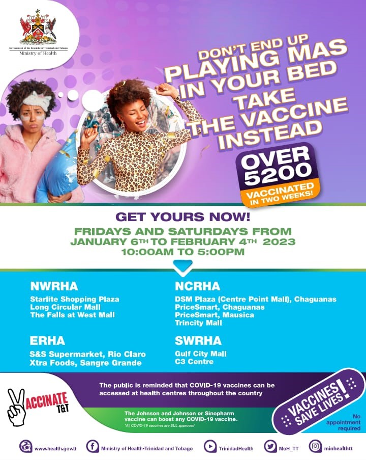
Successful Covid 19 and Influenza Vaccines Over 5,200 persons vaccinated! Build your defence against COVID-19 and Influenza